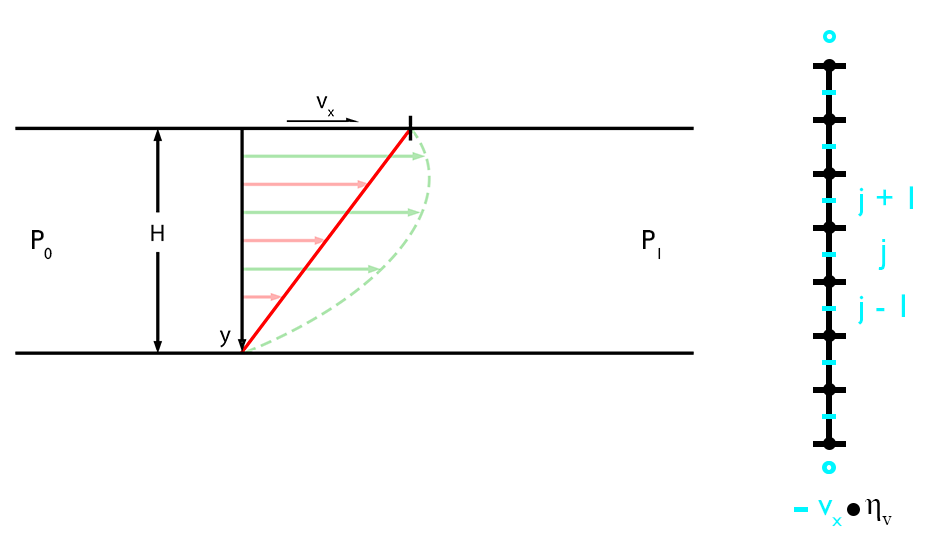

Stokes Equation (1D)
Before solving the stokes equation in two dimensions, let's first start with a simpler, one-dimensional problem: an uniaxial stokes flow in a horizontal channel assuming a known horizontal pressure gradient. A flow like this is a very good, first order approximation of a flow in a magma or subduction channel. The stokes equation in one dimension is defined as (e.g., in the $x$-direction):
$x$-component
\[\begin{equation} 0 = -\frac{\partial{P}}{\partial{x}} + \frac{\partial{\tau_{xy}}}{\partial{y}}, \end{equation}\]
where $P$ is the pressure in [ $Pa$ ], $\frac{\partial}{\partial{x_i}}$ is the partial derivative in the $i$-th direction, and $\tau_{xy}$ is the horizontal shear stress in [ $Pa$ ] and given by:
\[\begin{equation} \tau_{xy} = 2 \eta \dot{\varepsilon}_{xy}, \end{equation}\]
where $\eta$ is the viscosity in [ $Pa s$ ] and $\dot{\varepsilon}_{xy}$ is the shear strain-rate in [ $m/s$ ] and given by:
\[\begin{equation} \dot{\varepsilon}_{xy} = \frac{1}{2} \frac{\partial{v_x}}{\partial{y}}. \end{equation}\]
Note: For the $y$-component of the stokes equation one need to include the gravitational acceleration $g_y$.
Discretization

Figure 1. Channel flow setup and finite difference grid. Left: Sketch of an uniaxial channel flow driven by a constant velocity on top ($v_x$) and/or a horizontal pressure gradient $\left(\frac{\Delta{P}}{\Delta{x}} = P_1 - P_0 \right)$, that is a Couette, Poiseuille, or Couette-Poiseuille flow. Right: Finite difference grid using a conservative gridding, that is the viscosity is defined on the vertices and the horizontal velocity in between. The open circles at the top are ghost nodes for the horizontal velocity.
The finite difference grid shown in Figure 1 is a conservative gridding, that is the horizontal velocity is defined at different nodes as the viscosity. Thus, the horizontal shear stress is conserved between two adjacent grid points and defined on the vertices. A conservative gridding is required in case the viscosity does vary with depth. Before solving the problem for a variable, depth-dependent viscosity, let's first look at an isoviscous case.
***Constant Viscosity***
In case the viscosity is constant, a conservative gridding is not necessary. Equation $(1)$ is then given by:
\[\begin{equation} 0 = -\frac{\partial{P}}{\partial{x}} + \eta\frac{\partial^2{v_x}}{\partial{y^2}}. \end{equation}\]
Using the finite difference approximations for the partial derivatives (second derivative, central differences), equation $(4)$ is given as (assuming the horizontal pressure gradient is constant and known):
\[\begin{equation} \frac{\partial{P}}{\partial{x}} = \eta \left( \frac{v_{x,j-1} - 2v_{x,j} + v_{x,j+1}}{\Delta{y^2}} \right), \end{equation}\]
which can be simplified to:
\[\begin{equation} \frac{\partial{P}}{\partial{x}}=av_{x,j-1}+bv_{x,j}+cv_{x,j+1}, \end{equation}\]
where
\[a = c = \frac{\eta}{\Delta{y^2}},\ \textrm{and}\ b = -\frac{2\eta}{\Delta{y^2}}.\]
This is a linear system of equations in the form of $\bold{K} \cdot \overrightharpoon{v_x} = \overrightharpoon{rhs}$ with a three-diagonal coefficient matrix $\bold{K}$. The pressure gradient and the velocities at the boundaries define the known right-hand side (rhs) and the horizontal velocity in between the vertices are the unknown vector. For the sake of simplicity, no additional solver for the constant velocity case is included in the GeoModBox.jl, thus the viscosity needs to be treated numerically as an array and not as a scalar. For more information on how this is implemented see the source code.
***Variable Viscosity***
In case of a variable viscosity, equation $(1)$ is given by:
\[\begin{equation} 0 = -\frac{\partial{P}}{\partial{x}} + \frac{\partial{\tau_{xy}}}{\partial{y}} = -\frac{\partial{P}}{\partial{x}} + \frac{\partial}{\partial{y}}\left(\eta\frac{\partial{v_x}}{\partial{y}}\right). \end{equation}\]
The partial difference operators (first derivatives) in Equation $(7)$ are approximated using central finite differences, where the horizontal shear stress $\tau_{xy}$ and the viscosity are defined at the vertices and the velocity in between (for the sake of simplcity, let's call it the centroids in the 1-D case).
Using central difference for the shear stress, Equation $(7)$ is given by:
\[\begin{equation} \frac{\partial{P}}{\partial{x}}=\frac{\tau_{xy,j+1}-\tau_{xy,j}}{\Delta{y}},\ \textrm{for}\ j = 1:nc, \end{equation}\]
or in form of the unknowns:
\[\begin{equation} \frac{\partial{P}}{\partial{x}}=\frac{\eta_{j+1}\frac{\partial{v_x}}{\partial{y}}\vert_{j+1}-\eta_{j}\frac{\partial{v_x}}{\partial{y}}\vert_{j}}{\Delta{y}},\ \textrm{for}\ j = 1:nc. \end{equation}\]
Approximating the partial derivatives for the velocity results in:
\[\begin{equation} \frac{\partial{P}}{\partial{x}}=\frac{\eta_{j+1}\frac{v_{x,j+1}-v_{x,j}}{\Delta{y}}-\eta_{j}\frac{v_{x,j}-v_{x,j-1}}{\Delta{y}}\vert_{j}}{\Delta{y}}. \end{equation}\]
Note: The index $j$ goes from $1$ to $nc$, but the viscosity is defined on the vertices and the velocity on the centroids!
In terms of the unknown velocity, equation $(10)$ can be rewritten as:
\[\begin{equation} \frac{\partial{P}}{\partial{x}}=av_{x,j-1}+bv_{x,j}+cv_{x,j+1}, \end{equation}\]
where
\[\begin{equation} a = \frac{\eta_j}{\Delta{y^2}}, b = -\frac{\eta_j+\eta_{j+1}}{\Delta{y^2}},\ \textrm{and}\ c = \frac{\eta_{j+1}}{\Delta{y^2}}. \end{equation}\]
Again, this is a linear system of equations with a three-diagonal coefficient matrix.
Boundary Conditions
To solve the equations, one needs to define the boundary conditions. To properly implement Dirichlet and Neumann boundary conditions, one needs to describe the velocity at the ghost nodes. Similar to the thermal boundary conditions, the value for the velocity at the ghost nodes can be defined assuming a constant velocity at the boundary (i.e., Dirichlet) or a constant velocity gradient across the boundary (i.e., Neumann). The velocites are then defined as:
Dirichlet
Bottom
\[\begin{equation} V_{G,S} = 2V_{BC,S} - v_{x,1} \end{equation}\]
Top
\[\begin{equation} V_{G,N} = 2V_{BC,N} - v_{x,nc} \end{equation}\]
Neumann
Bottom
\[\begin{equation} V_{G,S} = v_{x,1} - c_s\Delta{y}, \end{equation}\]
Top
\[\begin{equation} V_{G,N}=v_{x,nc} + c_N\Delta{y}, \end{equation}\]
where
\[\begin{equation} c_S = \frac{dv_x}{dy}\vert_{S},\ \textrm{and}\ c_N=\frac{dv_x}{dy}\vert_{N} \end{equation}\]
To obtain a symmetric coefficient matrix one needs to adjust the coefficients for the centroids adjacent to the boundary and the corresponding right-hand side. The equations at the top and bottom are then given by:
Dirichlet
Bottom ($j=1$)
\[\begin{equation} \left(b-a\right)v_{x,1}+cv_{x,2} = \frac{\partial{P}}{\partial{x}} - 2aV_{BC,S} \end{equation}\]
Top ($j=nc$)
\[\begin{equation} av_{x,nc-1}+\left(b-c\right)v_{x,nx} = \frac{\partial{P}}{\partial{x}} - 2cV_{BC,N} \end{equation}\]
Neumann
Bottom ($j=1$)
\[\begin{equation} \left(b+a\right)v_{x,1}+cv_{x,2} = \frac{\partial{P}}{\partial{x}} + ac_SΔy \end{equation}\]
Top ($j=nc$)
\[\begin{equation} av_{x,nc-1}+\left(b+c\right)v_{x,nx} = \frac{∂P}{∂x} - cc_NΔy \end{equation}\]
Solution
There are different ways to solve the linear system of equations. The most convenient one would be a direct solution using the right division of the coefficient matrix by the right-hand side.
Direct
\[\begin{equation} v_x = \bold{K} ∖ rhs \end{equation}\]
Similar to the thermal problem, one can also solve the linear system of equations using the defect correction method. This is very helpful, once the system is non-linear and one can simply iterate to reduce the residual.
Defect Correction
Here, one first calculates the residual of the governing equation:
\[\begin{equation} R = -\frac{∂P}{∂x} + \frac{∂τ_{xy}}{∂y}, \end{equation}\]
or in form of the unknown horizontal velocity:
\[\begin{equation} R = -\frac{∂P}{∂x} + \bold{K} \cdot v_x. \end{equation}\]
Assuming an initial guess for the horizontal velocity $v_{x,i}$ one obtains an initial residual $R_i$:
\[\begin{equation} R_i = -\frac{∂P}{∂x} + \bold{K_i} \cdot v_{x,i}. \end{equation}\]
Let's assume that the initial guess leads to the exact solution, i.e. the residual is zero, by adding a correction term $\delta{v_x}$. With a little algebra one finds:
\[\begin{equation} 0 = -\frac{∂P}{∂x} + \bold{K}\left(v_{x,i}+ \delta{v_x} \right) = \bold{K}\cdot v_{x,i} -\frac{∂P}{∂x} + \bold{K}\cdot \delta{v_x} = R_i + \bold{K} \cdot \delta{v_x}. \end{equation}\]
Rearanging the equation to:
\[\begin{equation} R_i = -\bold{K}\cdot{\delta{v_x}}, \end{equation}\]
one can solve for the correction term:
\[\begin{equation} \delta{v_x} = -\bold{K}^{-1}R_i. \end{equation}\]
Finally, adding the correction term to the initial guess gives the solution:
\[\begin{equation} v_x^n = v_{x,i} + \delta{v_x}. \end{equation}\]
In case the system is linear, this would be the solution for the problem. For a non-linear problem, one needs to iterate over the equation until the residual is small enough. For more information on how this is implemented see the source code.
How to solve the channel flow problem using the defect correction method is given within the examples.
Solving the same issue using the direct solution is part of the exercises.